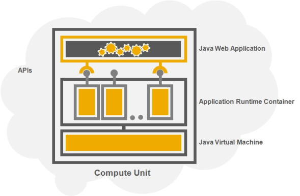

SAP Cloud Platform enables you to develop, deploy and use Java applications in a cloud environment. Applications run on a runtime container where they can use the platform services APIs and Java EE APIs according to standard patterns.
The SAP Cloud Platform Runtime for Java enables the provisioning and running applications on the platform. The runtime is represented by Java Virtual Machine, Application Runtime Container and Compute Units. Cloud applications interact at runtime with the containers and services via the platform APIs.

The Java development process is enabled by the SAP Cloud Platform Tools, which comprise the Eclipse IDE and the SAP Cloud Platform SDK.
During and after development, you can configure and operate an application using the cockpit and the console client.